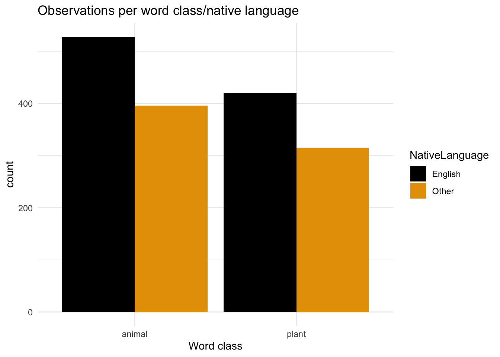

# Addition
16+32[1] 48Daniela Palleschi
Humboldt-Universität zu Berlin
Mi. den 17.04.2024
Hier finden Sie die Aufgaben zu den einzelnen Kapiteln.
Diese Übungen finden sich auch in Kapitel 1.
File > New File > R Script)
# Angewandte Datenverarbeitung und Visualisierung - Woche 1 (17.04.2023)here-Paket (in der Konsole).here() (in Ihre R-Skript mit Strg+/Cmd+Eingabe). Was geschieht in der Konsole?Cmd/Strg-Eingabe, um sie auszuführen. Was passiert?Speichern Sie die Werte 16 und 32 als Objekte namens x bzw. y.
Versuchen Sie, die Funktion mean() mit Ihren gespeicherten Variablen (x und y) als “verkettete” Argumente auszuführen (d.h., mit c()).
Machen Sie dasselbe mit der Funktion sum(). Was passiert, wenn Sie c() nicht verwenden?
vec1, der die Werte 12, 183, 56, 25 und 18 enthältvec2, der die Werte 8, 5, 1, 6 und 8 enthältvec3 that contains the values 28, 54, 10, 13, 2, and 81vec1.vec2. Wie unterscheidet sich das Ergebnis von dem, das Sie für vec1 allein erhalten haben?vec1 und vec3 zu finden?Diese Übungen finden sich auch in Kapitel 2.
Reproduzieren Sie unser Histogramm als Dichte-Diagramm, indem Sie geom_histogram() durch geom_density() ersetzen.
Erstellen Sie ein Balkendiagramm, das die Anzahl der Beobachtungen pro Wortklasse zeigt (Hinweis: Sie benötigen die Variable Class aus unserem Datensatz).
Drucken Sie Ihren Dichteplot und Ihren Klassen-Balkenplot übereinander mit Hilfe des patchwork Pakets
Reproduzieren Sie die folgenden Diagramme so genau wie möglich (Hinweis: Sie benötigen das Argument position = "dodge"):

Konsole aus: RStudio.Version()$version
2022.07 oder höher ist, können Sie Quarto benutzenHelp > Check for updatesFile > New Document > Quarto Document
03-quarto
in der YAML…
title)Autor: "vorname nachname" (siehe Beispiel unten)toc), indem du format so änderst, dass es wie folgt aussieht:Rendern nun das Dokument. Sehen Sie Ihre Änderungen?
Fügen Sie Ihrem Dokument einige Überschriften und Texte hinzu, die das Format und die Struktur von Quarto-Dokumenten beschreiben. Fügen Sie beispielsweise eine Überschrift mit dem Titel “YAML” ein, die kurz beschreibt, wie YAML formatiert ist.
Fügen Ihrem .qmd Dokumententext eine Textformatierung hinzu.
Fügen eine Aufzählungsliste hinzu
Fügen eine nummerierte Liste hinzu
Rendern Sie das Dokument. Hat es geklappt?
.qmd Datei hinzu
## Addition)Erinnern Sie sich, dass wir letzte Woche die Funktion c() (EN: concatenate) gesehen haben, die mehrere Werte kombiniert (z.B. mean(c(3,4,25)) ergibt den Mittelwert von 3,4 und 25)
Objektname <- c(...))echo: false und rendern das Dokument. Was ändert sich?echo: true, aber eval: false. Rendern das Dokument. Was ändert sich?html in der YAML durch revealjs. Rendert das Dokument.
format auf pdf. Rendert das Dokument.
pdf durch den Buchstaben l zu ersetzen. R schlägt eine Vervollständigung vor, welche ist es? Wähle sie aus und rendere das Dokument.html. Rendert das Dokument.revealjs dort?df_lexent, wobei Sie nur die Spalten Reaktionszeiten (in Millisekunden), NativeLanguage und Word für Zeilen auswählen, die jede der folgenden Bedingungen erfüllen, sie in der Reihenfolge der Reaktionszeiten anordnen und so filtern, dass nur diese Zeilen berücksichtigt werden:
arrange()) df_lexent in absteigender Reihenfolge, um die Versuche mit den längsten Reaktionszeiten zu finden.df_rz, das df_lexent enthält, und dann:
select()) Sie die Variablen Teilnehmer, NativeLanguage, Word, rz_s, laenge, und Frequencyrz_s_laenge (mutate()), die rz_s geteilt durch laenge ist
Laenge gesetztrename()`) Sie diese Variablen in Englisch um, so dass sie in Deutsch (und mit Kleinbuchstaben) sind.---
title: "Aufgaben"
author: "Daniela Palleschi"
institute: Humboldt-Universität zu Berlin
# footer: "Woche 13 - Base R"
# date: "01/24/2024"
date-format: "ddd [den] DD.MM.YYYY"
date-modified: last-modified
shift-heading-level-by: +1
---
Hier finden Sie die Aufgaben zu den einzelnen Kapiteln.
# Einführung in R und RStudio
Diese Übungen finden sich auch in @sec-intro_r.
## Neue R-Skript
1. Öffnen Sie ein neues R-Skript (`File > New File > R Script`)
+ wenn sich oben links ein neues Fenster öffnet: "Datei > Speichern unter...".
+ speichern Sie es in Ihrem 'notizen' Ordner
+ schreiben Sie oben in das Skript: `# Angewandte Datenverarbeitung und Visualisierung - Woche 1 (17.04.2023)`
## Paket-Installation
1. Installieren Sie das `here`-Paket (in der Konsole).
2. Führen Sie die Funktion `here()` (in Ihre R-Skript mit `Strg+/Cmd+Eingabe`). Was geschieht in der Konsole?
## Rechnen in R
1. Versuchen Sie, die folgenden Berechnungen in der Konsole auszuführen:
```{r}
#| output-location: column-fragment
#| code-line-numbers: false
# Addition
16+32
```
```{r}
#| output-location: column-fragment
#| code-line-numbers: false
# Multiplikation
16*32
```
```{r}
#| output-location: column-fragment
#| code-line-numbers: false
# Subtraktion
16-32
```
```{r}
#| output-location: column-fragment
#| code-line-numbers: false
# Division
16/32
```
3. Schreiben Sie diese Berechnungen in Ihr Skript, und drücken Sie `Cmd/Strg-Eingabe`, um sie auszuführen. Was passiert?
## Rechnen mit Objekte und Funktionen
1. Speichern Sie die Werte 16 und 32 als Objekte namens x bzw. y.
4. Versuchen Sie, die Funktion `mean()` mit Ihren gespeicherten Variablen (`x` und `y`) als "verkettete" Argumente auszuführen (d.h., mit `c()`).
5. Machen Sie dasselbe mit der Funktion `sum()`. Was passiert, wenn Sie `c()` nicht verwenden?
## Vektoren
1. Erstelle einen Vektor namens `vec1`, der die Werte 12, 183, 56, 25 und 18 enthält
2. Erstellen Sie einen Vektor namens `vec2`, der die Werte 8, 5, 1, 6 und 8 enthält
3. Create a vector called `vec3` that contains the values 28, 54, 10, 13, 2, and 81
4. Finde die Summe von `vec1`.
5. Finde die Summe von vec1 plus `vec2`. Wie unterscheidet sich das Ergebnis von dem, das Sie für vec1 allein erhalten haben?
6. Was passiert, wenn du versuchst, die Summe von `vec1` und `vec3` zu finden?
# Datenvisualierung 1 {#app-data_viz1}
Diese Übungen finden sich auch in @sec-data_viz1.
1. Reproduzieren Sie unser Histogramm als *Dichte-Diagramm*, indem Sie `geom_histogram()` durch `geom_density()` ersetzen.
+ Was zeigt diese Art der Darstellung?
2. Erstellen Sie ein Balkendiagramm, das die Anzahl der Beobachtungen pro Wortklasse zeigt (Hinweis: Sie benötigen die Variable `Class` aus unserem Datensatz).
3. Drucken Sie Ihren Dichteplot und Ihren Klassen-Balkenplot übereinander mit Hilfe des `patchwork` Pakets
4. Reproduzieren Sie die folgenden Diagramme so genau wie möglich (Hinweis: Sie benötigen das Argument `position = "dodge"`):
```{r}
#| echo: false
#| label: fig-bar1
#| fig-cap: zu reproduzierende Abbildung
pacman::p_load(tidyverse, languageR, ggthemes, patchwork)
df_lexdec <- lexdec
fig_lexdec_class <-
ggplot(data = df_lexdec) +
aes(x = Class, fill = NativeLanguage) + ## set aesthetics
labs(title = "Observations per word class/native language",
x = "Word class") +
geom_bar(position = "dodge") +
scale_fill_colorblind() + ## make fill colorblind friendly
theme_minimal() ## set plot theme
fig_lexdec_class
```
# Quarto
## Schreiben und Formatieren eines Quarto-Dokuments
1. Führen den folgenden Code in der `Konsole` aus: `RStudio.Version()$version`
- wenn die ausgegebene Version `2022.07` oder höher ist, können Sie Quarto benutzen
- wenn nicht, aktualisieren Sie RStudio: `Help > Check for updates`
3. Erstellen Sie in Ihrem R-Projekt-Ordner, in dem ihr Ihre Kursunterlagen/Notizen aufbewahren, einen neuen Ordner für Woche 3
4. `File > New Document > Quarto Document`
- Geben Sie ihm einen Titel wie "Quarto - Woche 3"
- Deaktivieren Sie die Option "open with Visual Editor".
5. Schauen das neue Skript an, um mehr über Quarto zu erfahren.
6. Klicken Sie auf die Schaltfläche "Render" am oberen Rand des Dokuments
- Speichern Sie das Dokument in dem Ordner für Woche 3, den Sie gerade erstellt haben.
- Was geschiehen? Vergleichen die Ausgabe mit dem Quellcode des Dokuments.
7. Gehen Sie zurück zu Ihrem neuen Ordner `03-quarto`
- Was hat sich geändert?
in der YAML...
8. Ändern Sie den Titel, wenn Sie das tun möchten.
9. Raten Sie, wie man einen "Untertitel" (EN: subtitle) hinzufügen könnte (Hinweis: es ist ähnlich wie beim Hinzufügen eines `title`)
10. Fügen Sie einen Autor hinzu, `Autor: "vorname nachname"` (siehe Beispiel unten)
11. Füge ein Inhaltsverzeichnis hinzu (EN: Table of Contents, `toc`), indem du `format` so änderst, dass es wie folgt aussieht:
```{r}
#| eval: false
---
title: "Quarto - Woche 3"
author: "Vorname Nachname"
format:
html:
toc: true
---
```
12. Rendern nun das Dokument. Sehen Sie Ihre Änderungen?
13. Fügen Sie Ihrem Dokument einige Überschriften und Texte hinzu, die das Format und die Struktur von Quarto-Dokumenten beschreiben. Fügen Sie beispielsweise eine Überschrift mit dem Titel "YAML" ein, die kurz beschreibt, wie YAML formatiert ist.
1. Fügen Ihrem `.qmd` Dokumententext eine Textformatierung hinzu.
2. Fügen eine Aufzählungsliste hinzu
3. Fügen eine nummerierte Liste hinzu
4. Rendern Sie das Dokument. Hat es geklappt?
## Kodierung in einem Quarto-Dokument
### Code chunks
1. Fügen Sie einen Code Chunk zu deiner `.qmd` Datei hinzu
- Fügen Sie einige mathematische Operationen ein (Addition, Subtraktion, etc)
- Fügen Sie informative Anmerkungen zu Ihrem Code hinzu (z.B. `## Addition`)
2. Fügen Sie einen Text unter deinem Code-Chunk hinzu, der beschreibt, was der obige Code erreicht hat.
3. Rendern Sie das Dokument. Hat es geklappt?
### Concatenate
Erinnern Sie sich, dass wir letzte Woche die Funktion `c()` (EN: concatenate) gesehen haben, die mehrere Werte kombiniert (z.B. `mean(c(3,4,25))` ergibt den Mittelwert von 3,4 und 25)
1. In einem Code-Stück: Erstellen sie ein Objekt, das eine Liste von Zahlen enthält (z.B. `Objektname <- c(...)`)
2. Berechnen Sie den Mittelwert dieser Zahlen, indem Sie nur den Objektnamen verwendt.
3. Speichern Sie den Mittelwert dieser Zahlen als ein Objekt
4. Rendern Sie das Dokument und seht sich den Abschnitt mit Ihrem Code-Chunk an.
- Ändern Sie nun im Quellcode die Chunk-Einstellungen auf `echo: false` und rendern das Dokument. Was ändert sich?
- Setzen Sie nun `echo: true`, aber `eval: false`. Rendern das Dokument. Was ändert sich?
### Plots in Quarto
1. Einen neuen Codeabschnitt erstellen und das Balkendiagramm von letzter Woche erzeugen, aber als Objekt speichern
2. In einem separaten Codechunk nur den Objektnamen dieses Diagramms angeben
3. Rendern Sie das Dokument, um zu sehen, wo die Abbildung gedruckt wurde.
### Ausgabeformate
1. Ersetzen Sie `html` in der YAML durch `revealjs`. Rendert das Dokument.
- Schauen Sie den Ordner für die Notizen dieser Woche an. Welche Dateien seht?
2. Setzen Sie nun `format` auf `pdf`. Rendert das Dokument.
- Läuft es?
- Versuchen Sie, `pdf` durch den Buchstaben `l` zu ersetzen. R schlägt eine Vervollständigung vor, welche ist es? Wähle sie aus und rendere das Dokument.
3. Setzen Sie das Format wieder auf `html`. Rendert das Dokument.
4. Gehen Sie zurück zu Ihrem Ordner mit den Notizen dieser Woche. Welche Dateien seht?
- Ist die Ausgabe von `revealjs` dort?
### SessionInfo
1. Fügen Sie eine "Session Info" Abschnitt am Ende des Dokuments hin.
# Data Wrangling 1: Transformation
## Aufgaben {.unnumbered}
1. Drucken Sie in einer einzigen Pipeline `df_lexent`, wobei Sie nur die Spalten Reaktionszeiten (in Millisekunden), NativeLanguage und Word für Zeilen auswählen, die jede der folgenden Bedingungen erfüllen, sie in der Reihenfolge der Reaktionszeiten anordnen und so filtern, dass nur diese Zeilen berücksichtigt werden:
- die Reaktionszeiten waren größer als 500ms *und* kleiner als 550ms
- aus den Wörtern "pear", "elephant" oder "tortoise" stammen
```{r}
#| eval: false
#| echo: false
library(languageR)
df_lexdec <- lexdec |>
mutate(RT = exp(RT)) |>
select(Subject, RT, Trial, Sex, NativeLanguage, Correct, Word, Frequency, Class, Length)
df_lexent <-
df_lexdec |>
rename(teilnehmer = Subject)
df_lexent <-
df_lexdec |>
rename(teilnehmer = Subject,
rz_ms = RT,
geschlect = Sex,
laenge = Length)
df_lexent <-
df_lexent |>
mutate(
rz_s = rz_ms / 1000,
.after = rz_ms
)
df_lexent |>
select(rz_ms, NativeLanguage, Word) |>
arrange(rz_ms) |>
filter(rz_ms <= 550 & rz_ms > 500,
Word %in% c("tortoise", "elephant", "pear"))
```
2. Sortiere (`arrange()`) `df_lexent` in absteigender Reihenfolge, um die Versuche mit den längsten Reaktionszeiten zu finden.
```{r}
#| eval: false
#| echo: false
df_lexent |>
arrange(desc(rz_ms))
```
3. Speichern Sie in einer einzigen Pipeline ein neues Objekt namens `df_rz`, das `df_lexent` enthält, *und dann*:
+ Selektieren (`select()`) Sie die Variablen `Teilnehmer`, `NativeLanguage`, `Word`, `rz_s`, `laenge`, und `Frequency`
+ Erstelle eine neue Variable `rz_s_laenge` (`mutate()`), die `rz_s` geteilt durch `laenge` ist
+ und wird vor `Laenge` gesetzt
+ Benennen (`rename`()`) Sie diese Variablen in Englisch um, so dass sie in Deutsch (und mit Kleinbuchstaben) sind.
```{r}
#| echo: false
#| eval: false
df_rz <-
df_lexent |>
select(teilnehmer, NativeLanguage, Word, rz_s, laenge, Frequency) |>
mutate(rz_s_laenge = rz_s/laenge, .before = laenge) |>
rename(muttersprache = NativeLanguage,
wort = Word,
frequenz = Frequency) ## etcetera
```
##